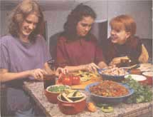
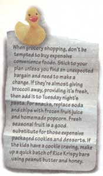
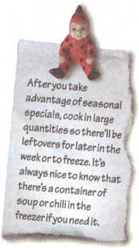
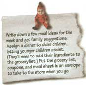
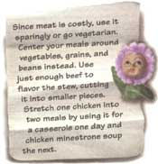
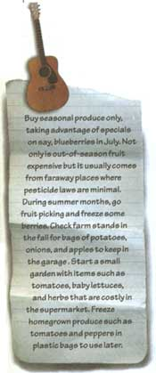
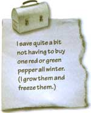
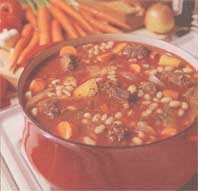

MOTHER'S KITCHEN
Making something out of (well, almost) nothing.
I just read a restaurant review in which the food was mysteriously described as "playful and bold." Whatever happened to plain "good and cheap"? But when it comes to grocery shopping, I'm inevitably faced with one of those good news/bad news situations. The bad news is that food prices are continually rising while our paychecks are not. But the good news is that healthy, low-cost meals can still be found. This doesn't mean that we're confined to a daily ration of rice 'n' beans. By making thrifty selections throughout the week, we can splurge on the Saturday-night salmon. Cost aside, our ultimate goal really is to have tasty food, and these tips have helped make our meals healthy, good, and cheap.
Here's an inexpensive meal to fill up a bunch of teenagers without going broke. (Save time, too - have them prepare it.)
1 teaspoon oil
4 large white- or red-skinned potatoes, cut into quarter-inch cubes
2 chorizo sausages* (about a half pound), casings removed
1 large onion, diced
2 large cloves garlic, minced
1 poblano* pepper, diced (or a small green pepper if poblanos aren't available)
1 small red pepper, diced
1/2 teaspoon cumin
salt and pepper to taste
corn or flour tortillas
Topping ideas:
"lite" sour cream or yogurt
green onions
tomatoes
cilantro
grated Muenster or jack cheese
salsa (homemade is cheaper)
avocado (uncheap)
Heat up a large nonstick skillet on medium-high heat. Add the oil, then the potatoes. Let them brown, without stirring for about five minutes. Check to see at they're crisp, then flip over to brown the other side with the skillet covered. Watch so they don't burn. When they're browned and tender, remove from the skillet into a bowl and set aside. Brown the sausages, breaking up the meat into small pieces as you stir. Add the onion, garlic, peppers, and cumin. Sauté until the vegetables are tender, then taste for seasonings. Serve in a large bowl with small topping bowls surrounding it. The tortillas can be wrapped in a dish towel and heated in the microwave or wrapped in foil and heated in a 350° F. oven.
*May be purchased at a Mexican grocery.
Anything goes with this old standby. If you have some frozen summer green beans or a piece of cabbage, throw it in. You could make a meatless stew but then you wouldn't have the brown gravy.
1/2 lb. stew meat, cut into half-inch pieces
2 tablespoons flour
1 tablespoon olive oil
freshly ground pepper
3 large cloves garlic, minced
4 cups water
3/4 cup dried navy beans (or other small beans such as azuki)
2 medium turnips, quartered and sliced into half-inch pieces
3 medium rutabagas, quartered and cut into half-inch pieces
4 medium carrots, cut into half-inch circles
3 small onions, peeled and quartered
1 teaspoon dried basil
1/2 teaspoon dried thyme
1/4 cup red wine
1/4 cup tomato paste
1/2 teaspoon salt
1/4 teaspoon cayenne pepper
chopped parsley (optional)
In a plastic bag, shake the meat and flour. Place a large soup pot on mediumhigh heat, then add the oil. Add the meat and cook for a minute or so without stirring until browned, then stir. Add the pepper and let brown again, lowering the heat if it starts to burn. (It's okay if the meat sticks a little.) When the meat has browned, add the garlic for about 30 seconds. Pour in the water and the beans. After the water heats up, reduce heat to medium, cover, and simmer for one hour. Meanwhile, scrub and peel the vegetables if necessary. If you're making mashed potatoes, start cooking them at this time. When the hour is over, add the vegetables and herbs. Cover and simmer for another hour or so until the vegetables are tender but not mushy. Add the wine, paste, salt, and cayenne. Heat a few minutes, adding more water if necessary. Serve over mashed potatoes or noodles and top with parsley.
If you hate to peel, use thin-skinned white or red potatoes. The skins can be mashed also but they'll give the mashed potatoes a chunky texture. If you don't have a potato masher, invest a few dollars. It's the only way to mash 'em. If you can't find this outdated utensil, try a dime or hardware store in a small town.
6-8 large brown russet potatoes, peeled
1 tablespoon butter or oil
2 small leeks
2 large cloves garlic, minced
salt, pepper, and cayenne to taste
Put one inch of water in a covered pot. Cut the potatoes into one-inch circles and place in the pot. Cover and simmer for about 45 minutes until tender. If the stew isn't ready, the potatoes can rest in the covered pot for up to an hour before they'll have to be reheated. In a skillet, sauté the leeks in the butter until soft (about two minutes). Stir in the garlic for about half a minute. Drain the potato water and save. Using a potato masher, mash the potatoes until they're no longer in clumps. Add the leek mixture and a little potato water at a time until you have the desired consistency. (You could also use heated skim or low-fat milk.) Mash in the seasonings and serve.
A great soup for a crowd on a cold wintery day.
3 cups uncooked northern beans
8 cups water
1 tablespoon olive oil
1 large onion, chopped
2 large cloves garlic, minced
3 medium carrots
3 stalks celery
1 teaspoon dried thyme
1/2 teaspoon oregano
1 teaspoon tamari soy sauce
1 tablespoon white wine vinegar (or cider vinegar)
1 tablespoon brown sugar
1/3 cup tomato paste
1/2 teaspoon salt
1/4 teaspoon cayenne pepper
freshly ground pepper
Place the beans in a large soup pot and add water until the beans are covered with an inch or so extra. Bring the beans to a boil, cover, and turn off the heat. Let sit for at least one hour but not longer than four hours. Drain the bean water and add the eight cups of water. Cover and simmer the beans for an hour or so until they're tender. Meanwhile, slice the carrots diagonally into quarter-inch slices. Do the same with the celery and set aside. Pour the beans and liquid into a large bowl.
Heat the oil in the soup pot on mediumhigh heat and sauté the onions until soft, then add the garlic. Sauté for a minute, then pour the beans and liquid back in the pot. Add all the rest of the ingredients, cover, and reduce to mediumlow heat. Simmer the soup for about 30 minutes until the vegetables are tender, stirring occasionally so it doesn't stick.
We always seem to have in our refrigerator small amounts of cooked pasta. I made up this dish one day for lunch so I could use up the cold pasta (and some leftover cooked veggies) and now I'm hooked on it. It only serves one person but you can double the recipe and use a larger skillet.
1 large egg, beaten
1 teaspoon unsalted butter or oil
1 large clove garlic, minced a small piece of hot pepper (optional), seeded and minced
1/2 cup chopped vegetables (whatever you have) such as diced red pepper, chopped fresh spinach, zucchini sliced into thin circles
1 cup cold, cooked pasta such as linguini
2 tablespoons freshly grated Romano or Parmesan cheese
salt and freshly ground pepper
herbs such as chives and basil during summer months
Set the beaten egg by the stove. Heat up a nonstick eight-inch sauté or omelette pan on medium-high heat and add the butter or oil. Quickly sauté the garlic and hot pepper, then add the vegetables, stirring until tender. (If you're using spinach, add it last since it only takes seconds to cook.) Remove the vegetables onto a plate and add a little more oil if the pan is dry. Spread out the pasta in the pan so it's flat and pour the egg evenly over the top. Place the vegetables on top of the pasta and then add the cheese. Sprinkle with salt and pepper.
When the bottom is crispy, carefully flip the frittata over to cook for not more than a minute on the other side. (A frittata is usually placed under the broiler to cook the top but I prefer this easier method.) Flip right side up onto a plate. It tastes great topped with a few slices of tomato and chopped herbs if you have them.
1 1/2 cup water
3/4 cup raw long-grain white rice (I use basmati white rice.)
1 3/4 cup skim milk
3 large egg yolks
1/4 cup sugar
1/4 cup maple syrup
2 tablespoons crystallized ginger,* minced
1/2 teaspoon cinnamon
1/4 teaspoon mace or nutmeg
1/2 cup currants or raisins
1 teaspoon cinnamon
Place a nine-inch (or eight-inch) square baking pan inside a larger baking pan to make sure it fits, then remove. Fill the larger pan half-full with water. Place on the middle shelf of the oven and preheat the oven to 350° F.
In a large saucepan, bring the water to a boil. Stir in the rice, cover, and reduce heat to a simmer. Cook for about 12 minutes until the rice is tender. Remove the lid and add the milk. Continue to simmer while you whisk the eggs and sugar together in a small bowl until creamy. Whisk the egg mixture into the rice.
Add the rest of the ingredients except the cinnamon. Heat the pudding just until it gets hot, stirring frequently. Pour into the nine-inch pan and sprinkle with cinnamon. Open the oven door and pull out the shelf, carefully placing the pudding pan inside the larger pan. (An eight-inch pan will be very full.) Bake for one hour and check to see if the milk has solidified. If not, return to oven for 10 to 15 minutes. Cool on a rack and then chill thoroughly before cutting into squares and serving.
*Crystallized ginger can usually be purchased in the Asian section of the supermarket, an Asian grocery, or a health food store. It should be soft and chewy, not rock hard.
Some foods are always a deal. While you may not want them every day, try to include them when you want to cut corners.
EGGS: Here's a high-protein meat substitute that's under a dollar. (Don't worry about the fat and cholesterol; an egg is much lower in fat than a burger.)
Beans: Canned or bulk, the nutritious bean is always economical.
Legumes: Lentils and split peas can add protein to any soup or stew.
Grains: Rice, oats, bulgar, etc., are fibrous and filling.
Pasta: This can vary, but a 79 cents package of linguini can feed three to four people, depending on the sauce.
Tortillas: Cost much less than a good loaf of bread.
Produce: Carrots, celery, cabbage, and potatoes stay low priced all year long.
|
 |
 |
|
|
 |
|
 |
|
 |
 |
 |
|
 |
|
|